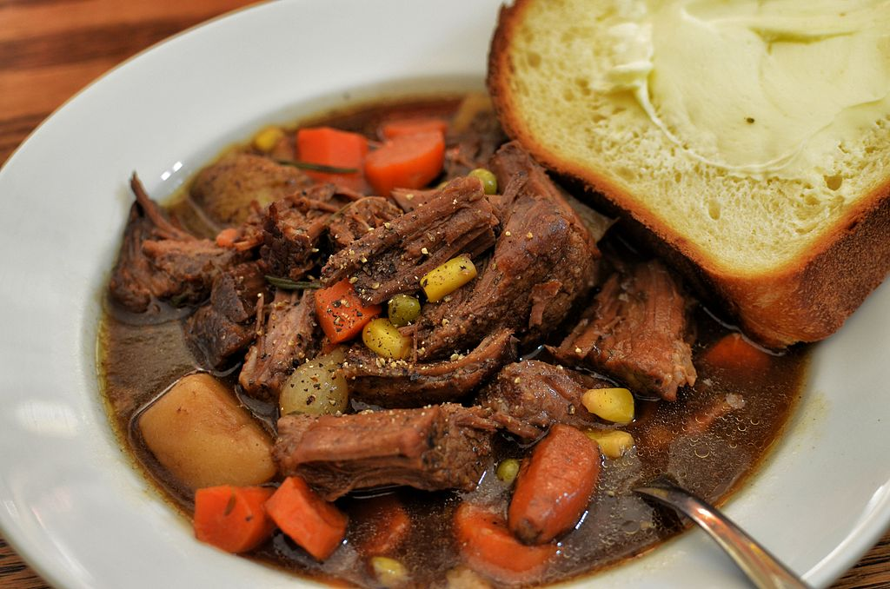

Description
A simple, class beef stew recipe.
Ingredients
- 1-2 lbs. beef chuck (or round steak or other), cut in 1 to 1-1/2 inch cubes
- 2 cups of beef bouillon (or 2 cups water with about 3 teaspoons beef bouillon granules or 3 cubes)
- 3 teaspoons Worcestershire sauce
- 2 teaspoons chopped garlic
- 1 medium onion, sliced
- 1 or 2 bay leaves
- 1/2 tablespoon salt
- 1 teaspoon paprika
- 1/4 teaspoon pepper
- Dash ground allspice or cloves
- 6 carrots, pared and quartered
- 4 potatoes, pared and quartered
- 1 lb. small white onions (I usually just cut 2 medium onions into chunks)
- Gravy
Steps
Stew
- In Dutch oven, thoroughly brown meat in 2 tablespoons hot oil or shortening, turning often.
- Add 2 cups beef bouillion and next 8 ingredients (through the dash of allspice or cloves).
- Cover; simmer for 1-1/2 hours, stirring occasionally to keep from sticking.
- Remove bay leaves. Add vegetables. Cover and cook 30-45 minutes, or till vegetables are tender.
Serves 6-8. Note: I usually only brown the meat on the stove top. I put the covered Dutch oven in the oven at about 325-350 and do the rest of the cooking in there, following the approximate times shown above.
Gravy
- 1 cup beef bouillion
- 3-4 tablespoons flour
- Whisk flour into beef bouillon.
- Add all to beef stew and mix with liquid still in stew.
Basic mixture for gravy is 2 tablespoons flour to 1 cup liquid so I add flour based on the amount of liquid left in the stew. The main thing is to whisk the flour in the bouillon/water before adding to the hot stew, otherwise you get lumps.
Beef bouillon in cans is cumbersome so I always use granules and water. I'm generous with the granules -- 1+ or 2 teaspoons to a cup of water. I'm always generous with the amount of vegetables too.